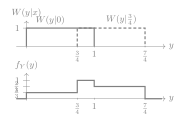
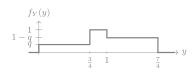
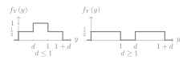
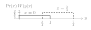

Seminar 5. Mutual information with continuous noise
The seven questions of the session, each with three options and one correct answer. Work out your answer before opening a solution.
A memoryless channel adds to a real input X a noise Z that is independent of X and uniform on [0,1) whose density is f_Z(z)=1 for 0\leq z<1 and 0 otherwise. The output is Y=X+Z, with channel law W(y|x) and output density f_Y(y). Questions 1 to 5 use the input X\in\{0,\tfrac34\}, with \Pr(X=0)=\tfrac13 and \Pr(X=\tfrac34)=\tfrac23 in questions 1 to 3, and with \Pr(X=0)=q in questions 4 and 5. Entropies are in bits, mutual informations in bits per channel use, and 0\log_20=0.
Question 1. What are the values of the output density f_Y(y) on the three intervals [0,\tfrac34), [\tfrac34,1) and [1,\tfrac74), in this order? Draw W(y|0), W(y|\tfrac34) and f_Y(y) as part of your answer.
(a) \tfrac13, 1 and \tfrac23
(b) \tfrac13, \tfrac13 and \tfrac23
(c) \tfrac16, \tfrac12 and \tfrac13
Show solution
The correct answer is (a) ★
The channel law is the density W(y|x)=f_Z(y-x), a unit rectangle starting at x, and the output density is the sum rule of Section 3.4 of the notes with densities in the place of probabilities, as for the exponential channel in lecture 6. It gives f_Y(y)=\tfrac13W(y|0)+\tfrac23W(y|\tfrac34), where W(y|0) equals 1 on [0,1) and W(y|\tfrac34) equals 1 on [\tfrac34,\tfrac74). On [0,\tfrac34) only the first term is nonzero, on [\tfrac34,1) both are, and on [1,\tfrac74) only the second. Hence f_Y equals \tfrac13, \tfrac13+\tfrac23=1 and \tfrac23, and the three areas \tfrac14+\tfrac14+\tfrac12 add to 1.

The answer is (a).
Question 2. What is the probability that the output falls in the interval [\tfrac34,1), where both inputs are possible?
(a) \tfrac13
(b) \tfrac12
(c) \tfrac14
Show solution
The correct answer is (c) ★
The probability of an interval is the area of the output density over it, by the rules of Table 1.1 of the notes with the integral in the place of the sum. By question 1, f_Y equals 1 on [\tfrac34,1), an interval of length \tfrac14, so the probability is \tfrac14. The same value follows from either input, since given X=0 or X=\tfrac34 the output is uniform on an interval of length 1 that contains [\tfrac34,1), and falls in it with probability \tfrac14. The input probabilities play no role, as \tfrac13\cdot\tfrac14+\tfrac23\cdot\tfrac14=\tfrac14 shows. The answer is (c).
Question 3. What is the mutual information I(X;Y)?
(a) \log_23-\tfrac23
(b) \tfrac34\log_23-\tfrac12
(c) \tfrac34
Show solution
The correct answer is (b) ★
By equation (3.24) of the notes, for additive noise I(X;Y)=h(Y)-h(Z). Example 3.11 gives h(Z)=\log_21=0 for a uniform noise on an interval of length 1. For the piecewise constant density of question 1, the integral of Definition 3.10 splits into three terms, length times value times minus the logarithm of the value, \begin{align*} h(Y)&=-\tfrac34\cdot\tfrac13\log_2\tfrac13-\tfrac14\cdot1\cdot\log_21-\tfrac34\cdot\tfrac23\log_2\tfrac23\\ &=\tfrac14\log_23+0+\tfrac12(\log_23-1)=\tfrac34\log_23-\tfrac12. \end{align*} Hence I(X;Y)=\tfrac34\log_23-\tfrac12\approx0.689 bits per channel use. An output in [\tfrac34,1) is equally likely under both inputs and says nothing, as an erasure does, with probability \tfrac14 by question 2, and any other output identifies the input. This is the bit-erasing channel with p=\tfrac14 of Seminar 4, question 7, with input probabilities \tfrac13 and \tfrac23, and its mutual information (1-p)H(X)=\tfrac34h_2(\tfrac13)=\tfrac34(\log_23-\tfrac23) is the same number. Option (a) is h_2(\tfrac13), the entropy of the input, which forgets the erasures.
Alternatively, we can calculate I(X;Y) as we did in the theory lecture, from Definition 3.3 with integrals over y. For each input x we integrate W(y|x) times \log_2\bigl(W(y|x)/f_Y(y)\bigr), and we average the results over the inputs. By question 1 the ratio is constant on each piece. For x=0 it equals 3 on [0,\tfrac34) and 1 on [\tfrac34,1), and for x=\tfrac34 it equals 1 on [\tfrac34,1) and \tfrac32 on [1,\tfrac74). Each integral is a length times a logarithm, \begin{align*} I(X;Y)&=\tfrac13\bigl(\tfrac34\log_23+\tfrac14\log_21\bigr)\\ &\quad+\tfrac23\bigl(\tfrac14\log_21+\tfrac34\log_2\tfrac32\bigr)\\ &=\tfrac14\log_23+\tfrac12(\log_23-1)=\tfrac34\log_23-\tfrac12, \end{align*} the same value. The overlap, where the ratio is 1, contributes nothing. The answer is (b).
Question 4. Now let \Pr(X=0)=q. Which expression gives I(X;Y) as a function of q\in[0,1]? Draw f_Y(y) as part of your answer.
(a) \tfrac34\,h_2(q)
(b) h_2(q)-\tfrac14
(c) h_2\bigl(\tfrac34q\bigr)
Show solution
The correct answer is (a) ★
The output density is now q on [0,\tfrac34), q+(1-q)=1 on [\tfrac34,1) and 1-q on [1,\tfrac74), by the same sum rule as in question 1.

As in question 3, h(Z)=0 and \begin{equation*} h(Y)=-\tfrac34q\log_2q-0-\tfrac34(1-q)\log_2(1-q)=\tfrac34\,h_2(q), \end{equation*} by the definition of the binary entropy function in Section 3.1 of the notes. Hence I(X;Y)=\tfrac34h_2(q), which is the (1-p)h_2(q) of Problem 3.6 with p=\tfrac14, so a fraction \tfrac34 of the entropy of the input gets through, whatever q is. At q=\tfrac13 it gives the \tfrac34\log_23-\tfrac12 of question 3. The answer is (a).
Question 5. What is the capacity of this channel with input X\in\{0,\tfrac34\}, and which q achieves it?
(a) 1 bit, at q=\tfrac12.
(b) \tfrac34 bits, at q=\tfrac12.
(c) \log_2\tfrac74 bits, at the q that makes f_Y uniform on [0,\tfrac74).
Show solution
The correct answer is (b) ★
The capacity is the largest mutual information over the input distributions, Definition 3.7 of the notes, here over q\in[0,1]. By question 4, I(X;Y)=\tfrac34h_2(q), and the binary entropy function is largest at q=\tfrac12, where it equals 1 (Section 3.1). Hence C=\tfrac34 bits per channel use, achieved by the equiprobable input, above the 0.689 of the input of question 3. It is the capacity 1-p of the bit-erasing channel with p=\tfrac14, Problem 3.6 and Seminar 4, question 7. One bit is impossible, since by question 2 a quarter of the outputs fall where both inputs are possible and carry no information, whatever q is. The value \log_2\tfrac74 would be the differential entropy of an output uniform on [0,\tfrac74), but no q gives that density, because its middle level is 1 for every q (question 4). The answer is (b).
Question 6. The input is now X\in\{0,d\}, equiprobable, where the spacing satisfies d>0. What is the mutual information I(X;Y) as a function of d? Include the necessary plots of f_Y(y) to fully justify your answer.
(a) d for every d>0.
(b) \log_2(1+d).
(c) d for d\leq1, and 1 for d\geq1.
Show solution
The correct answer is (c) ★
For d\leq1 the two supports [0,1) and [d,1+d) overlap on [d,1), and the output density equals \tfrac12, 1 and \tfrac12 on intervals of lengths d, 1-d and d. By the three-term computation of question 3, h(Y)=\tfrac d2+0+\tfrac d2=d and I(X;Y)=d. For d\geq1 the supports do not overlap, the output density equals \tfrac12 on two intervals of length 1, h(Y)=1 and I(X;Y)=1, which is the largest value allowed by I(X;Y)\leq H(X)=\log_22 in Proposition 3.4 of the notes. Increasing the spacing beyond 1 separates the two outputs completely and buys nothing more, since a two-point input saturates at one bit, as the constellations of Section 3.6 saturate at \log_2M.

The answer is (c).
Question 7. Consider the input of questions 1 to 3. What is the error probability of the MAP detector of Topic 1? Draw \Pr(x)\,W(y|x) for the two inputs as part of your answer.
(a) \tfrac16
(b) \tfrac1{12}
(c) \tfrac14
Show solution
The correct answer is (b) ★
The MAP detector, Definition 1.3 of Topic 1, chooses the input that maximizes \Pr(x)\,W(y|x). These are two rectangles, of height \tfrac13 on [0,1) for x=0 and of height \tfrac23 on [\tfrac34,\tfrac74) for x=\tfrac34.

On [0,\tfrac34) only x=0 is possible and on [1,\tfrac74) only x=\tfrac34, so there the decision is right. On the overlap [\tfrac34,1) both likelihoods equal 1, the likelihood ratio is 1 and the priors decide. Since \tfrac23>\tfrac13, the MAP detector chooses x=\tfrac34. It errs only when X=0 and the output falls in the overlap, which by question 2 has probability \tfrac14 given either input, so \begin{equation*} P_e=\Pr(X=0)\,\Pr\bigl(Y\in[\tfrac34,1)\,\big|\,X=0\bigr)=\tfrac13\cdot\tfrac14=\tfrac1{12}. \end{equation*} Deciding x=0 on the overlap would err with probability \tfrac23\cdot\tfrac14=\tfrac16, and \tfrac14 is the probability of the overlap itself. From X to the decision the channel is binary, with 0 taken for \tfrac34 with probability \tfrac14 and \tfrac34 never taken for 0, and its mutual information \tfrac23h_2(\tfrac14)\approx0.541 bits is below the 0.689 of question 3. Unlike in the exponential channel of lecture 6, the hard decision loses here, because an overlap output, read as an erasure, says more than a forced choice. The answer is (b).